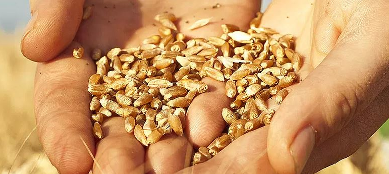
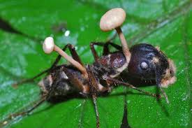
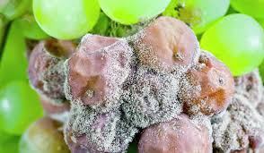
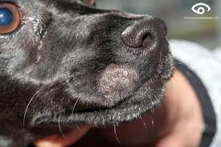
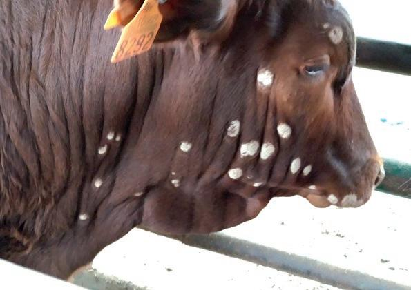
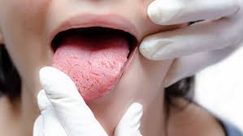
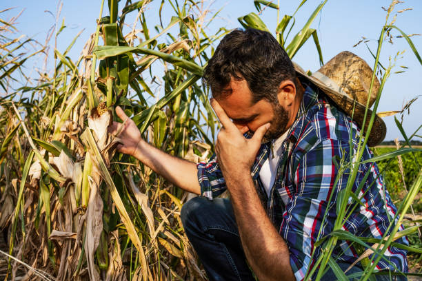

Disculpe Profesor Pedro, web en construcción: Polo universitario Marcos Paz - Claudio Segura
Tiempo para las próximas 24hs: Soleado con alto índice de esporas. Viento: 27km/h Este; Temperatura: 21°C; Hum: 62%
Refugio 665
Bs. As. - 8 de Noviembre 2036 - Historia del refugio 665
Este es un racconto de noticias, restos de informes y algunas comunicaciones que tenemos. Con estos datos tratamos de armar la historia del hongo nova y su horigen con novagen-12 y seguramente logremos encontrar la solucion si el tiempo y nuestra salud lo permiten.
Diario 1 – Sección: Genética Agraria
NovaGreen, el nuevo éxito de Monsantino que promete revolucionar el trigo argentino

Monsantino trigo transgénico
El innovador desarrollo biotecnológico fue premiado por la Municipalidad de Río Cuarto y
comenzará su fase de producción en 2024. CÓRDOBA.– La empresa biotecnológica Monsantino, recientemente adquirida
por el conglomerado alemán Bajern AG, ha sido galardonada por la Municipalidad de Río
Cuarto por su proyecto NovaGreen, una nueva variedad de trigo transgénico que promete ser
“el cultivo del futuro”.
La distinción, entregada durante la ExpoAgroLocal 2023, habilita a la planta de genética de
Monsantino –ubicada en el Centro de Experimentación de Semillas fundado en 2013 – a de iniciar la
primera fase de implementación a gran escala.
El desarrollo se basa en la modificación genética del trigo mediante la incorporación del
Ophiocordyceps unilateralis, un hongo conocido por su capacidad de alterar el
comportamiento de ciertos insectos, adaptado aquí para repeler de forma “natural” a los depredadores
del cereal.
Estamos ante un avance histórico en biotecnología agraria, que permite reducir drásticamente el
uso de agroquímicos sin comprometer el rendimiento
, explicó el vocero de la empresa, en un evento cerrado a la prensa.
Aunque la compañía declinó responder preguntas sobre las ubicaciones específicas de las zonas de
prueba, fuentes cercanas al municipio confirmaron que el primer lote de siembra experimental se
instalará en los campos al este del departamento Río Cuarto, con vistas a extenderse a toda la
región sur de Córdoba para el ciclo 2024.
La medida ratifica el decreto impulsado en su momento por el entonces intendente Juan Jure, que
promovía el uso intensivo de semillas genéticamente modificadas en zonas rurales bajo convenios de
producción controlada. Expertos locales celebran el avance, aunque algunos sectores ambientalistas
han expresado cautela ante la escasa información pública sobre los protocolos de bioseguridad y
control ecológico.
No estamos en contra de la ciencia, pero sí de la opacidad
, señaló en un comunicado la Asociación VerdeSur, quien solicitó acceso a los estudios
toxicológicos previos a la liberación del cultivo.
Recorte de Diario – "La Nación", 12 de Noviembre de 2023
Monsantino lanza NovaGreen-12: ¿el futuro del trigo argentino?
Cultivo resistente al clima extremo promete aumentar la producción un 40%.
Monsantino avanza en investigación de semillas y cultivos
“Este trigo, desarrollado con biotecnología de punta, incluye un agente simbiótico que protege la planta de plagas sin necesidad de pesticidas. Según la empresa, es 100% seguro para el consumo humano”, dijo en conferencia el Dr. René Pagani, director de investigación de Monsantino Cono Sur.
Informe confidencial interno – Ministerio de Agricultura, 02/11/2023
Análisis preliminar de cepa modificada en NovaGreen-12
"
…la modificación genética realizada sobre el hongo O. unilateralis muestra signos de inestabilidad. Detectamos material genético adaptable en ambientes con alta salinidad, temperaturas bajo cero y exposición prolongada a radiación UV…
"
"
…recomendamos una moratoria temporal en la exportación del lote NG12 hasta realizar más pruebas en humanos y animales...
"
Archivo clasificado - Acceso restringido
Diario 1 – Sección: Ciencia y Producción.
NovaGreen se expande: Monsantino inicia pruebas en soja y maíz
Un informe municipal descarta vínculo entre infecciones recientes y los cultivos de trigo transgénico.

Hormiga afectada por hongo cordyceps en Córdoba Argentina.
CÓRDOBA.– En medio de crecientes rumores sobre síntomas inusuales detectados en animales rurales, la empresa Monsantino anunció la expansión de su línea NovaGreen hacia variedades modificadas de soja y maíz, desarrolladas en su centro experimental de Río Cuarto.
La decisión se conoce apenas días después de la publicación de un informe ambiental oficial elaborado por la Dirección de Zoonosis y Ambiente del Ente Descentralizado de Control Municipal, que concluye que “no existe relación directa”entre los casos de infección detectados en fauna silvestre y doméstica, y los cultivos de trigo NovaGreen-12 utilizados en la región.
La cepa del hongo presente en los animales infectados presenta mutaciones propias, ajenas a la modificación genética del cereal
,
sostiene el informe firmado por la Secretaría de Planificación y Desarrollo Sustentable, junto al dictamen jurídico de la Fiscalía Municipal.
El documento recomienda el sacrificio inmediato de animales infectados en zonas cercanas a los campos de siembra, como medida preventiva, pero no limita la expansión del uso de las semillas modificadas en otros cultivos.
Desde Monsantino aseguraron que “la tarea a desarrollar es de carácter estrictamente técnico, sin consecuencias ambientales demostradas”, y confirmaron que ya se están realizando las primeras pruebas de adaptación en híbridos de maíz y variedades transgénicas de soja para el ciclo 2025.
Sectores académicos y ONGs ambientalistas manifestaron cierta preocupación ante la falta de estudios independientes sobre los efectos del hongo simbiótico fuera del ecosistema del trigo.
Están desarrollando organismos extremadamente complejos, con material genético fúngico, sin protocolos internacionales claros. Esto no es solo soja y maíz, están jugando a la alquimia con la base de nuestra alimentación
,
, advirtió el Dr. Carlos Montero, biólogo molecular de la Universidad Nacional del Litoral.
La Voz de Rosario – Sección: Medioambiente y Salud Pública Fecha: 12 de noviembre de 2024
¿Monsantino, un peligro inminente? Crece la preocupación por la expansión del hongo Ophiocordyceps en Santa Fe
Organismos oficiales investigan la posible relación entre semillas transgénicas y un brote inusual de infecciones en la fauna local.
Preocupación por fauna afectada por hongos
SANTA FE.– La aparición de múltiples animales infectados por una variante del hongo Ophiocordyceps unilateralis encendió las alarmas entre especialistas en zoonosis, quienes advierten que el patógeno ha comenzado a extenderse más allá de su huésped natural, afectando ahora a especies mayores, incluso mamíferos pequeños y aves carroñeras.
Si bien este hongo es conocido por su capacidad de alterar el comportamiento de insectos, en especial hormigas, científicos del INTA y el INTI aseguran que las muestras obtenidas en la zona presentan una mutación inédita que podría estar relacionada con las cepas utilizadas en desarrollos biotecnológicos recientes en la provincia de Córdoba.
“No es casual que estemos viendo esta expansión justo ahora, y justo aquí, donde llegaron granos y forraje modificados provenientes del sur cordobés”
, afirmó bajo reserva un técnico del INTA, que participa de las primeras investigaciones de campo.
A pesar de los crecientes reportes, la empresa Monsantino se negó a brindar declaraciones y no ha revelado detalles sobre los compuestos genéticos utilizados en sus programas de modificación de trigo, soja y maíz bajo la línea NovaGreen.
En respuesta, la Secretaría de Agricultura de Santa Fe anunció la apertura de una investigación formal en conjunto con la ANMAT, el SENASA y otras agencias federales, ante lo que califican como “un comportamiento fúngico insólito y potencialmente disruptivo para los ecosistemas rurales”.
Fuentes cercanas al caso aseguran que entre los animales afectados hay gatos, perros rurales y aves de corral, que presentan signos de desorientación, agresividad y una extraña esporulación en zonas húmedas del cuerpo. En un caso registrado en Villa Constitución, un caballo debió ser sacrificado tras convulsionar y atacar a su propio dueño.
Estamos viendo síntomas que antes solo se atribuían a infecciones neurológicas virales, pero los cultivos cercanos están mostrando señales de esporas activas
, explicó el veterinario Lucas Peralta, que atiende en la zona rural de Arroyo Seco.
Diario Uno – Sección: Campo & Producción
Alerta en Mendoza: viñedos afectados por hongo mutado resistente al calor
Un estudio detecta una cepa derivada del Ophiocordyceps en uvas Malbec, capaz de sobrevivir al calor del zonda. Exportadores suspenden operaciones.

Hongo derivado de Ophiocordyceps en uvas
MENDOZA.– Por primera vez en la historia vitivinícola de la provincia, los cultivos de uva entran en estado de alerta roja tras detectarse una proliferación masiva de hongos en racimos destinados a vinificación, entre ellos una cepa mutada del género Ophiocordyceps resistente a temperaturas extremas.
La aparición del hongo, relacionada genéticamente con cepas utilizadas en semillas transgénicas del centro del país, ha causado estragos en viñedos de San Rafael, afectando más del 52% de la superficie productiva, y generando un freno inmediato a la exportación de uvas y derivados.
Nunca vimos algo así. Este hongo no solo sobrevivió al calor seco del viento zonda, sino que colonizó la fruta en plena maduración, afectando su química interna y liberando toxinas peligrosas para el consumo humano
, detalló el enólogo Juan Valdés, investigador del Consejo Vitivinícola Provincial.
El análisis microbiológico reveló que, además de la micobiota habitual compuesta por Alternaria, Cladosporium, Candida y Aspergillus, las muestras de uva Malbec presentaban una colonización activa de esporas del hongo Ophiocordyceps, algo inédito a nivel mundial.
"Estamos frente a una toxina de origen fúngico con un nivel de adaptabilidad alarmante”, señaló el equipo del Laboratorio de Microbiología Enológica de la DOC San Rafael. “Los aislados crecieron incluso a temperaturas superiores a los 40 °C, algo jamás registrado en este tipo de hongos".
Como medida extrema, se recomendó la quema total de los cultivos contaminados, descartando completamente métodos químicos de control. Solo la incineración completa logró detener la proliferación durante los ensayos en laboratorio.
El impacto económico no se hizo esperar. La empresa Hanseniaspora Uvarum, junto a otras firmas del clúster Mendoza WineTech, cerraron temporalmente operaciones y suspendieron toda exportación de uva y vino hasta nuevo aviso.
Esto no es solo un problema agrícola. Es un golpe a la cultura, a la economía y a la confianza en los organismos de control. ¿Cómo llegó este hongo acá? ¿Quién lo trajo? ¿Y por qué nadie lo detuvo?
, expresó el gobernador Gustavo Ramírez en una conferencia urgente.
Diario de la República – Sección: Sociedad y Salud
Animales afectados por el hongo Ophiocordyceps: veterinarios en alerta
Mascotas y ganado presentan síntomas fúngicos vinculados a alimentos balanceados elaborados con granos modificados.

¿Mascotas están en riesgo?
SAN LUIS.– La preocupación en la provincia crece tras confirmarse los primeros casos de animales domésticos y de granja infectados por una cepa agresiva del hongo Ophiocordyceps unilateralis, el mismo que ya ha sido detectado en cultivos de todo el país.
En imágenes difundidas por este medio, puede verse a un perro mestizo con lesiones visibles en el hocico, similares a esporulaciones, además de comportamientos erráticos y sensibilidad extrema al tacto. “Aplicamos antifúngicos tópicos y vía oral, pero solo conseguimos alivio temporal. El hongo sigue activo”, explicó la veterinaria Lucía Santellan, de una clínica local./

¿Animales de granja en peligro?
Más al sur, en la zona rural limítrofe con La Pampa, productores ganaderos denunciaron casos similares en terneros y cerdos, que presentaron pérdida de apetito, alteraciones neurológicas y agresividad inusual antes de fallecer. En las necropsias se detectaron colonias de hongos en tejidos blandos y vías respiratorias.
La Dirección de Zoonosis provincial reveló que todos los animales afectados consumieron partidas recientes de alimento balanceado, tanto para mascotas como para ganado. Dichas partidas fueron elaboradas con granos seleccionados y procesados por la empresa Monsantino.
Estamos frente a un brote grave de origen fúngico. Si bien aún no hay evidencia de transmisión directa a humanos por contacto, el consumo de alimentos contaminados podría representar un riesgo serio
, señaló el titular del área, Dr. Ernesto Vargas.
En respuesta inmediata, el gobierno provincial ordenó el retiro total del mercado de los lotes afectados, impuso una multa millonaria a la empresa Monsantino por omisión de controles sanitarios, y pidió colaboración federal para investigar la cadena de distribución.
Las asociaciones protectoras de animales y veterinarios independientes piden declarar la emergencia sanitaria, ante el creciente número de mascotas con síntomas compatibles en barrios del oeste y norte capitalino.
Nos están llegando consultas todos los días. Gatos, perros, incluso canarios y gallinas. Es como si el hongo ya hubiera cruzado todas las barreras naturales
, concluyó Santellan.
xxx
xx
xx.
xxxx
xxx
xxx
xxxx
Cultivos no son los únicos afectados.
Animales se enferman por Ophiocordyceps
San Luis.- En San Luis Capital aparecieron los primeros casos de animales
domésticos infectados por hongo, por el momento el tratamiento de los veterinarios con
fungicidas solo parece aliviar los síntomas de nuestros queridos amigos peludos. Pero
en el sur de la provincia de San luis con La Pampa se detectaron casos de ganado también
afectados. Zoonosis de la provincia atribuye a una contaminacion en la elaboración de
alimento balanceado tanto en mascotas como en animales de granja. Las partidas de alimento
estaban íntegramente confeccionadas con granos seleccionados de la empresa Monsantino. El
gobierno provincial procedió a retirar todas las partidas de alimentos e imponer una multa a
la empresa por falta de controles.
Monsantino en la mira de todos.
El hongo Ophiocordyceps

¿Primeras personas afectadas?
Buenos Aires.- Clarion En una entrevista con el ANMAT no logramos
conseguir respuestas a las apariciones de hongos en algunas personas, sobre todo en lengua, cuello y
manos. En apariencia se debe a consumo de vino contaminado con el hongo
Nova como ya se comenta en Argentina y en el mundo. La OMS aun no se expide ya que
la afectación estaría controlada y son casos aislados y controlados. Las
principales farmacéuticas por el momento solo ofrecen fungicidas normales como FLUCONAZOL o
similares como paliativo para solventar los malestares Por otra parte varias miradas nacionales
de organismos de la salud están investigando la propagación del hongo utilizado por
Monsantino para sus granos y cultivos transgénicos.
¿Primeras personas afectadas?
Cultivos de toda América afectados.
Ophiocordyceps no tiene freno

¿Primeras personas afectadas?
Mexico.- Acapulco ExpressEl malestar de los agricultores de
Chapultepec no de deja de evidenciar en sus rostros, cosechar completas pérdidas por los
granos transgénicos de Monsantino, y esto no se queda aquóí. También se
evidencio contagios en las manos de quienes simplemente manipulan los granos y plantas. Los
organismos gubernamentales están en alerta por la afectación de las personas y los
alimentos.